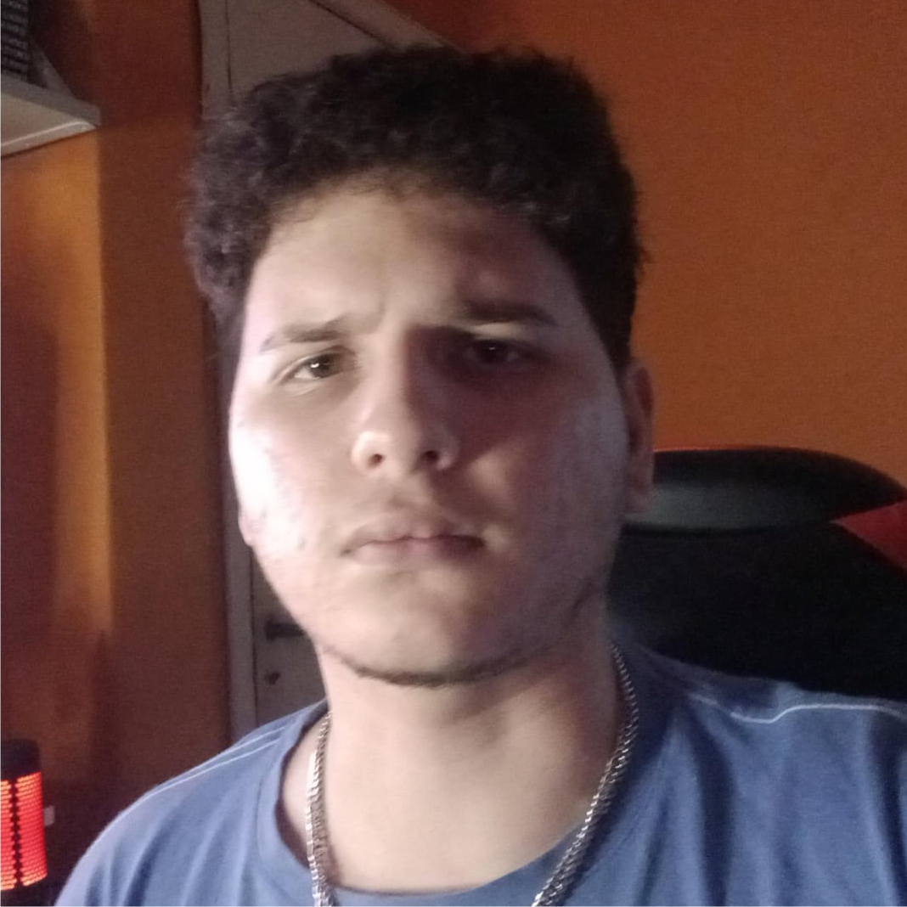

Sobre mí

Información Académica y Profesional
Actualmente estoy en el último año de la Licenciatura en Desarrollo de Videojuegos, formándome como programador y trabajando tanto con Unreal Engine como con Unity en entornos 2D y 3D. Además, fundé y patenté mi emprendimiento NABYS, donde junto a mi equipo desarrollamos páginas web y piezas gráficas para distintos clientes. Uno de los pilares clave en nuestro crecimiento fue trabajar desde 2023 con Toyota del Pilar, lo que nos permitió consolidar el proyecto.

Hobbies y Entretenimiento
En mi tiempo libre me apasionan los videojuegos, tanto actuales como retro, y disfruto mucho coleccionar consolas y manga. También me encanta jugar al fútbol y participar en distintos eventos cuando tengo la oportunidad. Además, me gusta cocinar y uno de los platos que mejor me salen son las salsas. Otra de las cosas que disfruto mucho es manejar, a veces incluso hacer viajes largos sin un destino fijo, simplemente por el gusto de salir a la ruta y despejarme un poco.